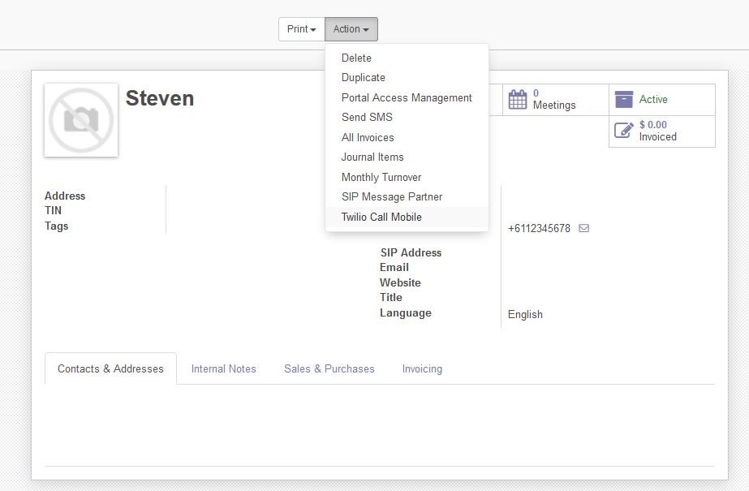

Description
Add support for Twilio XML
Serve Twilio XML
 Serves out Twilio XML which directs calls to the callee
Serves out Twilio XML which directs calls to the callee
add "[domain]/twilio/voice" under the request URL
Import Call Log
 Import log of calls made using external SIP clients
Import log of calls made using external SIP clients
Access the import button under CRM->VOIP->Twilio Accounts
Manual Calling

Manually call mobile phones and talk in real time.
IMPORTANT In order for this feature to work you will need to add numbers unders CRM->VOIP->Stored Numbers and you will need to setup a function and application inside Twilio, see this link for reference.
https://www.twilio.com/docs/voice/client/javascript/quickstart
Find a bug or need support? send an email to steven@sythiltech.com.au